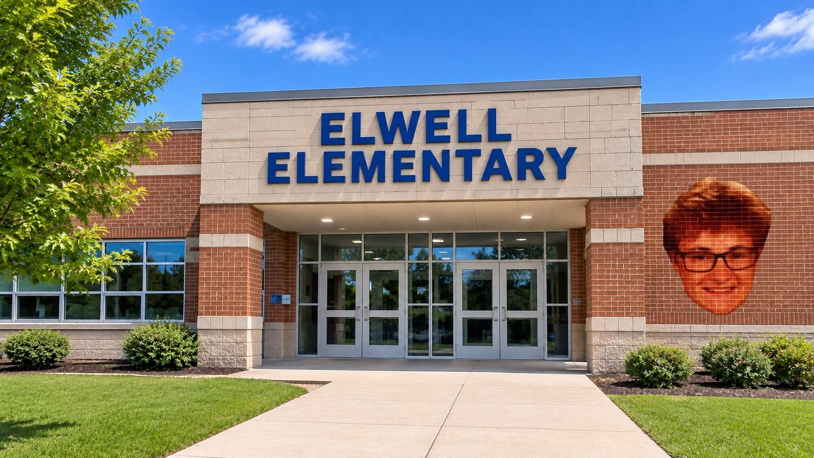

Education in Donville
Donville offers a variety of educational opportunities for its residents, from elementary to high school.
There are a handful of schools in the area, each with their own unique charm and character.
Donville offers a variety of educational opportunities for its residents, from elementary to high school.
There are a handful of schools in the area, each with their own unique charm and character.

Elwell Elementary was funded by the Elwell family, who while having their amazing contributions, also had a rather... odd reputation within the community. Nonetheless, the school has been a cornerstone of education in Donville for many years.
.jpg)
Named after the renowned educator Aiden William Gill, this school has a strong tradition of academic excellence and is known for its dedicated teachers and supportive learning environment. And totally not for all the bad things that have happened there! (with the stuff here, you'd be surprised that this PALES in comparison to the high school.)
.jpg)
(oh boy, this one is really bad!)
Isaiah L. Knaby High School has a long and storied history, but it's also known for some rather unfortunate incidents. (poor guy who was in that mascot suit when those 11th graders did... a certain something... (yuck.))
Despite this, the school continues to serve the community and provide educational opportunities for its students. Many of the alumni here have gone to do amazing things with their lives!
Please don't ask what the guy who went to Utah State after graduation ended up on the news for.